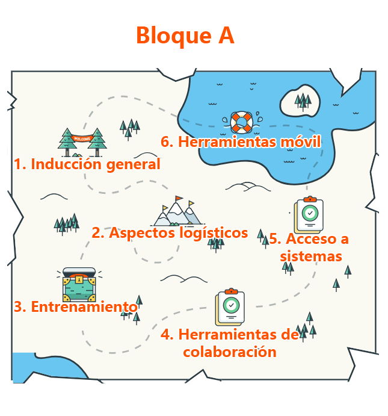

<ion-header>
    <ion-navbar>
        <button ion-button menuToggle>
            <ion-icon name="menu"></ion-icon>
        </button>
        <ion-title>Bloque A</ion-title>
    </ion-navbar>
</ion-header>
<ion-content padding>
    <ion-fab top right edge>
        <button ion-fab mini (click)="irHome()">
            <ion-icon name="home"></ion-icon>
        </button>
    </ion-fab>
    <br />
    <ng-progress></ng-progress>
    <button ion-button outline (click)="run()">start</button>
    <ion-grid>
        <ion-row>
            <ion-col>
                
            </ion-col>
        </ion-row>
    </ion-grid>
    <button ion-button full round (click)="induccion()">Inducción General</button>
    <button ion-button full round (click)="Aspectos()">Aspectos Logísticos</button>
    <button ion-button full round (click)="Capacitacion()">Capacitación</button>
    <button ion-button full round (click)="Herramientas()">Herramientas de colaboración</button>
    <button ion-button full round (click)="HerramientasMov()">Herramientas Móvil</button>
    <button ion-button full round (click)="Acceso()">Acceso a sistemas</button>

</ion-content>